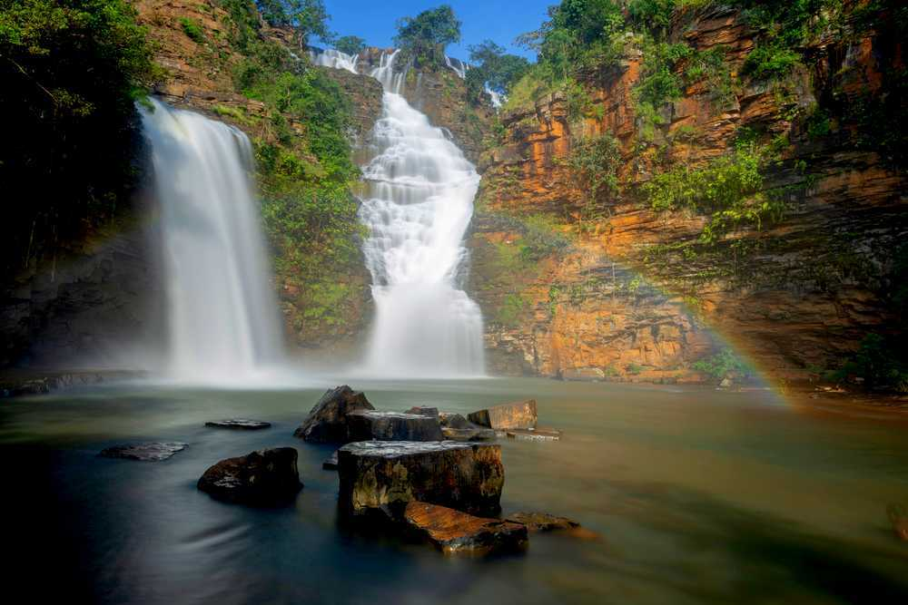
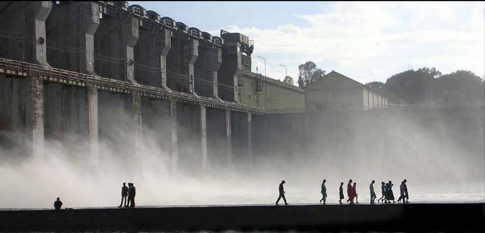
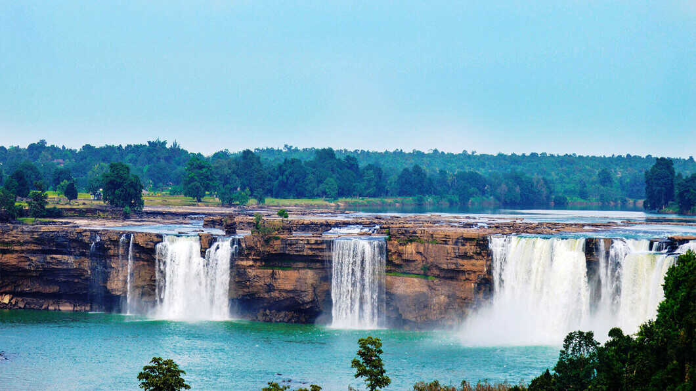
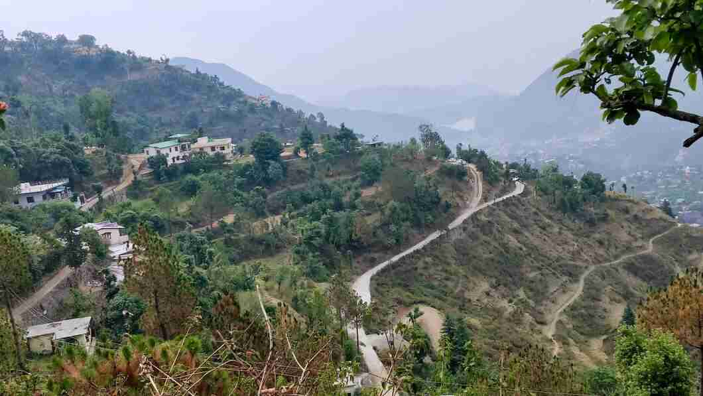

Jagdalpur is a beautiful and naturally bountiful city in the Bastar district of Chhattisgarh and is one of the most popular tourist destinations in the state after Raipur and Bhilai.
Sirpur is a small village located in the state of Chhattisgarh, situated on the banks of river Mahanadi. It is 35 km away from the Mahasamund district and around 78 km away from the city of Raipur, which is the capital of Chhattisgarh.
Madku dweep is a beautiful island situated near the silent river, Shivnath, in the Bilaspur district of Chhattisgarh.
aniyadhar River and Water Falls is 60 km from district headquarter Baikunthpur Korea and 25 km from block headquarter Sonhat.

Home to the Chalukya empire of the 14th Century, Dhamtari is an important tourist town of Chattisgarh, also known for its temples.

Known as one of the densest national parks in India, the Kanger Ghati National Park offers a rich biodiversity, breathtaking landscapes, natural waterfalls, beautiful limestone caves, and home to the state bird of Chhattisgarh, Hill Myna.
The broadest waterfall in India, Chitrakote is popularly known as the Niagara of India, because of its width.
The only tiger reserve in the green state of Chhattisgarh, Indravati National Park boasts of a wildlife population larger than many others in the country.
The Bhoramdeo Temple bears a striking resemblance to the Sun Temple of Konark and is believed to have been constructed during the 7th to 12th century.

Chitrakot waterfalls are formed by the water of river Indravati flowing through the mountain range in Vindhya Mountain. Sometimes, this horse-shaped waterfall is identified as India's Niagara Falls and experiences the highest tourists during the rainy season.

Chirmiri is among the best places to visit in Chhattisgarh and is located in the Koriya district. The locals often address this marvellous hill station as the “Heaven of Chhattisgarh”.
One of the most famous tourist attractions in Chhattisgarh, the Barnawapara Wildlife Sanctuary is home to the Bar and Nawapura forest villages. It was established in the year of 1976 and is spread over a vast area of 245 sq. Km.